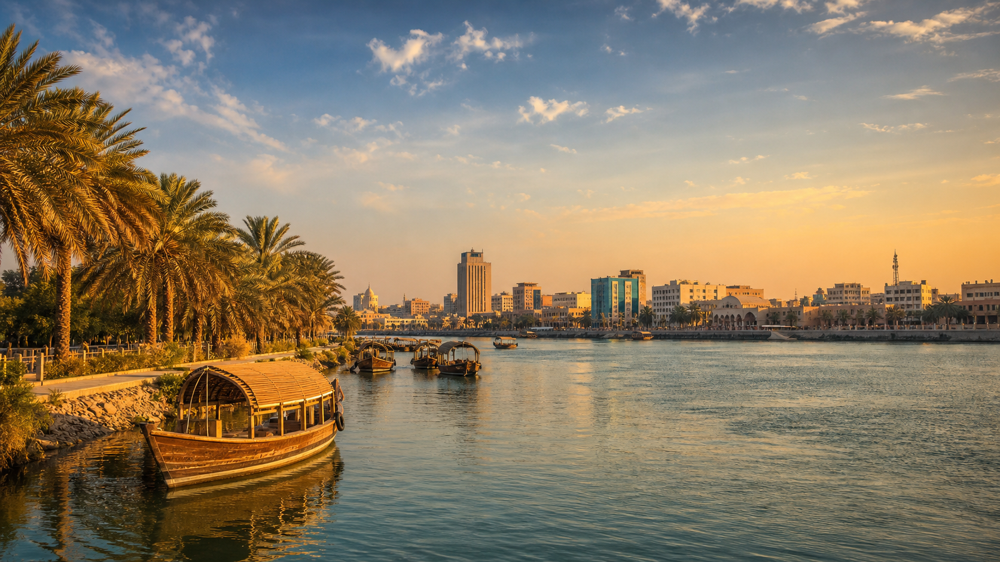

EXPLORE
A day on the Shatt al-Arab
Follow the water past date gardens, old houses and the city's favourite evening promenades.
Read the story →
WELCOME TO SOUTHERN IRAQ
A city shaped by two rivers, open horizons and generations of generous welcome.
Explore the city ↓A CITY BETWEEN RIVERS
Basra is Iraq's southern gateway — a place of date palms, waterways, poetry and enterprise. Ancient hospitality and bold ambition share the same riverbank here.
DISCOVER BASRA
Follow the water past date gardens, old houses and the city's favourite evening promenades.
Read the story →Meet the growers keeping Basra's most beloved tradition alive.
Read the story →From Al-Mirbad to today's writers, language has always found a home here.
Read the story →BASRA AT A GLANCE
Figures are presented as an editorial city overview and should be verified with official statistical sources before formal use.
BUILD YOUR FUTURE HERE
Basra connects Iraq to regional markets and the Gulf. Discover opportunities in logistics, food, tourism, technology and the blue economy.
Business in Basra →CITY DIRECTORY